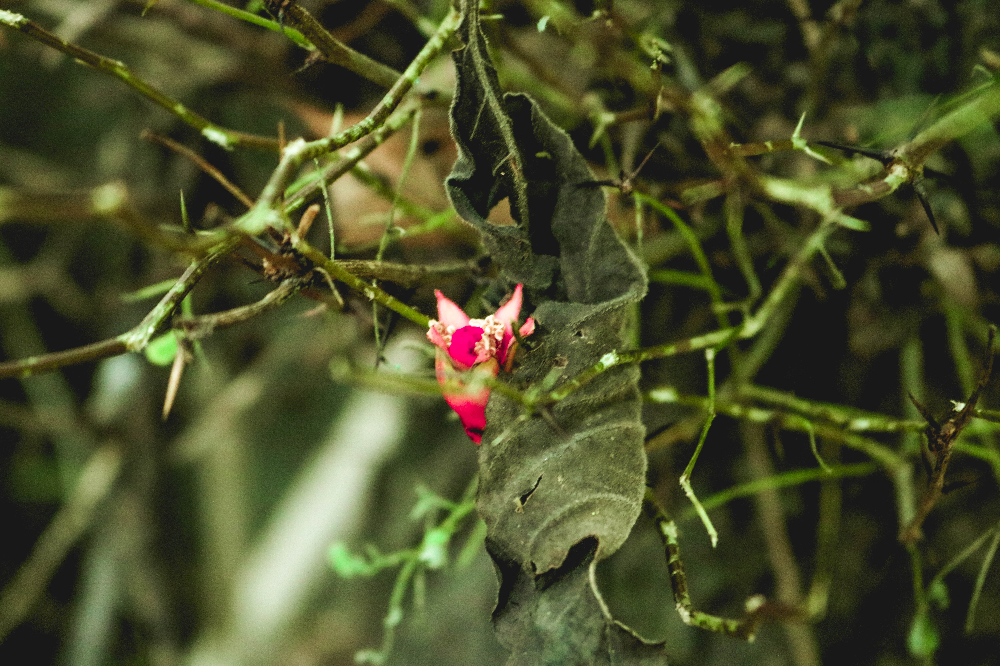

Conservación

Fauna del Amazonas

Flora del Amazonas
Biodiversidad y conservación
El Amazonas peruano es un ecosistema increíblemente diverso que alberga una de las mayores concentraciones de biodiversidad en el planeta. Con sus densos y enormes bosques, ríos caudalosos y una increíble variedad de especies, el Amazonas se ha ganado el título de "pulmón del mundo". Sin embargo, esta riqueza natural está amenazada por actividades humanas, lo que hace que los esfuerzos de conservación sean más urgentes que nunca.
La selva amazónica en Perú alberga una increíble diversidad de flora y fauna.
Es el hogar de más de un tercio de todas las especies animales registradas en el mundo, incluyendo el 20% de todas las especies de aves.
Este vasto territorio, que abarca más de la mitad del estado peruano, es el hogar de una de las selvas tropicales más grandes y ricas del mundo.
El río Amazonas, que nace en los Andes peruanos, es el río más largo del mundo con una longitud oficial de 6,992 kilómetros, transportando enormes cantidades de agua dulce que lo convierten en una de las zonas más fértiles del planeta.
En este trabajo exploraremos las riquezas naturales del Amazonas peruano, haciendo especial énfasis en su fauna, flora y los esfuerzos por preservar su biodiversidad única.
Conservación
Fauna del Amazonas
Flora del Amazonas
El Amazonas peruano es uno de los ecosistemas más importantes del mundo, no solo por su biodiversidad excepcional y abundante, sino también por su papel en la regulación del clima global y el sustento de numerosas comunidades indígenas. Sin embargo, la creciente presión humana y el cambio climático amenazan su equilibrio. Por ello, la conservación de esta región es una prioridad tanto a nivel nacional como internacional.

Deforestación: Amazonas peruano
Para contrarrestar estas amenazas, diversas estrategias han sido implementadas por el gobierno peruano, organizaciones ambientales y comunidades locales.
Estas estrategias han resultado ser efectivas en la reducción de la deforestación. Estas áreas restringen las actividades económicas, lo que ha generado beneficios económicos. El SINAPE (Sistema Nacional de Áreas Naturales Protegidas por el Estado) es fundamental para la conservación de los ecosistemas. Actualmente existen 46 áreas protegidas que cubren unos 20 millones de hectáreas.
Las ANPs (Áreas Naturales Protegidas) en la Amazonía peruana incluyen una amplia variedad de categorías, como Parques Nacionales, Reservas Nacionales, Bosques de Protección, Reservas Comunales, Santuarios Nacionales, Santuarios Históricos y Zonas Reservadas. Dentro de las ANPs hay varias categorias, entre ellas se encuentran la de uso múltiple y estríctas (de uso indirecto). Las de uso múltiple, que permiten ciertas actividades económicas, han demostrado un impacto similar o mejor en la deforestación que las estríctas. Ambos tipos de ANPs son úiles para evitar alzas temporales en la deforestación observadas en bosques no protegidos.
Para mejorar la conservación, se establecen trabajos conjuntos con gobiernos regionales con la finalidad de detener el fraccionamiento del hábitat alrededor de las ANPs, lo que podría llevar a su insostenibilidad a futuro.
Zonas protegidas en Perú
Diversas organizaciones han puesto en marcha iniciativas para recuperar áreas degradadas, promoviendo la siembra de especies nativas y la regeneración natural de los bosques.
Como es el caso de el fundo Campo Verde, en Pucallpa, que ha coseguido una gran reforestación con especies nativas. Actualmente resaltan especies como la caoba y el shihuahuaco.
Este proyecto se inició en Pichanaki en 2009, con la ayuda de AVSF (Agronomes et Véténiares Sans Frontières) del Perú y CO2 Consultores.
Donde plantaron parcelas de 1 a 10 hectáreas haciendo un total de 305ha. Como consecuencia, ahora cerca de 200 familias son beneficiarias directas.
En la amazonia peruana tambien se ha implementado un programa de agroforestería que consiste en la contribución a recuperar las masas forestales y evitar los ecosistemas.
Shihuahuaco
El turismo sostenible se ha convertido en una alternativa económica para las comunidades locales, incentivando la conservación de la biodiversidad y generando ingresos sin dañar el ecosistema. El Ecoturismo consiste en viajar de forma responsable a áreas naturales, con el objetivo de disfrutar y apreciar la naturaleza mientras se preserva el entorno. Este tipo de turismo se centra en conocer los ecosistemas naturales.
Las comunidades indígenas han jugado un papel clave en la conservación del Amazonas, debido a su conocimiento ancestral sobre el uso sostenible de los recursos naturales. Se han implementado programas para fortalecer sus derechos territoriales y fomentar su participación en proyectos de conservación. Su protección es de gran importancia debido a que estas se enfrentan a numerosas amenazas. Como hemos visto anteriormente, la deforestación es un problema muy serio en el Amazonas Peruano, la cual afecta directamente a estas poblaciones indígenas, ejerciendo presión por proyectos forestales, extracción forestal, minería y transporte.
Puablo indígena
The Nature Conservancy (TNC) trabaja con las comunidades para intentar minimizar daños, ya que desafortunadamente, el daño es inevitable.
Las tierras y territorios de estos pueblos ocupan aporximadamente el 18% de la superficie de la cuenca del Amazonas, unos 10.5 millones de hectáreas.
Existe un plan biorregional propuesto por organizaciones indígenas para proteger el 80% de la Amazonia en Perú y Ecuador para 2025, una superficie de 35 millones de hectáreas de selva tropical, o, dicho en otros términos, 35 millones de campos de fútbol.
En la Amazonia Peruana viven alrededor de 50 pueblos indígenas. La constitución peruana reconoce los derechos territoriales que estos tienen e implementaron leyes para proteger sus tierras ante la deforestación y minería ilegal entre otras muchas cosas. Estas comunidades estan protegidas por, no solo el gobierno peruano, sino organizaciones no gubernamentales y organismos internacionales con proyectos que incluyen el apoyo a la autonomía territorial y procesos de toma de decisiones. Estos pueblos, además son participantes muy activos en la conservación al ecosistema y biodiversidad de la Amazonía con prácticas sostenibles e iniciativas de conservación y apoyo a las ANPs.
La protección de estas comunidades no es solo una cuestión de humanidad y justicia, sino que también de conservación ambiental de ecosistemas y biodiversidad.
Orquídea del Amazonas: Esta flor es símbolo de la biodiversidad en la selva tropical del Amazonas. Es de tamaño pequeño que prefiere clima cálido.
Fun fact: Las orquídeas del Amazonas son conocidas por su diversidad y belleza, con más de 30,000 especies identificadas.
Lirios gigantes: Son plantas con hojas flotantes que pueden alcanzar hasta 3 metros de diámetro. Su esructura le permite soportar el peso de un niño pequeño. Florecen pétalos blancos que se tornan rosados al día siguiente.
Fun fact: Solo duran 48h. La primera noche emite un aroma para atraer escarabajos polinizadores, se cierran para atraparlos hasta la noche siguiente. Cuando cambian de color los liberan.
Bastón del emperador: Flor tropical de color rojo intenso crece en forma de cono y es una de las más llamativas en el amazonas. Se puede usar como medicina tradicional y ornamenación.
Fun fact: Lo que vemos son brácteas, no una flor. Son estructuras modificadas de la planta. Las verdaderas flores son pequeñas y ocultas dentro de la inflorescencia.
Piñita roja: Mirando la imagen se puede observar como tiene un gran parecido a una piña pero en miniatura con hojas espinosas y una tonalidad roja brillante.
Fun fact: Esta planta crece sobre otras plantas pero sin dañarlas. Puede absorber agua y nutrientes del aire y la lluvia, ayudando a mantener la humedad del ecosistema.
Heliconia: Es una planta con flores colgantes en forma de pico de color roja, naranja y amarilla. Esta forma tan única llama la atención de los colobríes, que son sus principales polinizadores.
Fun fact: Se le conoce como "pico de loro" por la forma de sus flores. Además, sus hojas son similares a las del banano, ya que ambas plantas pertenecen a la misma familia.
oreja de elefante: Tiene hojas enormes y en forma de corazón, parecidas a orejas de elefante. Crece sobre suelos húmedos y es muy usada en la cocina amazónica ya que las raíces son comestibles.
Fun fact: Las hojas contienen cristales de oxolato de calcio, una sustancia tóxica. Produce irritación si se toca con la mano desnuda o se come cruda.
Ceiba: Uno de los árboles más grandes y emblemáticos de la selva amazónica. Puede llegar a medir hasta 70 metros de altura. Cuando es joven presenta espinas.
Fun fact: Considerado sagrado por muchas culturas indígenas, quienes creen que conecta la Tierra con el cielo.
La Amazonía peruana es una de las áreas con mayor biodiversidad y endemismos del planeta, albergando una gran variedad de especies animales. Aquí, algunas de las más destacadas:
Mono choro de cola amarilla: Mono endémico de Perú, se caracteriza por su cola amarilla y su denso pelaje marrón oscuro. Viven en bosques de los Andes y se encuentran en peligro de extinción.
Fun fact: Su cola es tan fuerte que puede colgarse en árboles de ella sin usar las manos.
Capybara: Es el roedor más grande del mundo, habita en zonas húmedas y pantanosas. Es un animal extremadamente social y pasa mucho tiempo en el agua para refrescarse y escapar de depredadores.
Fun fact: Son tan pacíficos que otras especies como aves y monos los llegan a usar como transporte subiéndose a su lomo.
Boa amarilla: Es una serpiente constrictora no venenosa que habita en ríos y pantanos. Es una excelente nadadora y se camufla perfectamente entre la vegetación mientras caza.
Fun fact: Aguanta bajo el agua hasta más de 10 minutos, ello lo convierte en una gran cazadora sigilosa y eficiente en medios acuáticos.
Rana venenosa de campana: Famosa por su piel de colores que advierte a sus depredadores de la toxicidad de su piel. Este veneno proviene de los insectos y hormigas que consume en la selva.
Fun fact: No hay dos con las mismas manchas y colores. Los científicos las identifican gracias a esta caracterísitca como si de huellas dactilares se tratase.
Guacamayos coloridos de la torre: Loros con plumajes llamativos de color rojo, verde y amarillo. Son muy inteligentes y sociales, conocidas por sus fuertes llamadas y su longevidad.
Fun fact: Imitan sonidos con mucha facilidad, es capaz de aprender palabras humanas si se cría en cautiverio. Algunas viven hasta 80 años, con lo que podría compañar a su dueño toda la vida.
Jaguar: Es el felino más grande de América y el tercero del mundo. Es solitario y poderoso, conocido por su habilidad para nadar y acechar a sus presas en la selva.
Fun fact: Su mordida es la más fuerte de los felinos, es capaz de perforar el caparazón de una tortuga o el cráneo de su presa de un mordisco.
Bufeo negro: Es el delfín del amazonas. Es una variante del delfín rosado. Ágil nadador que se mueve entre los ríos ayudando a mantener el equilibrio ecológico del ecosistema acuático.
Fun fact: Según las leyendas amazónicas, se transforma en hombre atractivo por las noches para seducir a humanos.
Águila harpía: Es una de las águilas mas grandes y poderosas del mundo, sus garras pueden ser más grandes que las de un oso pardo. Caza monos, perezosos y otros mamíferos en lo alto del dosel del Amazonas.
Fun fact: Sus patas pueden ejercer una presión de 50kg, lo suficiente como para levantar a un perezoso adulto en pleno vuelo.